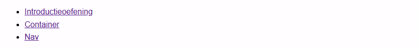

Labo 02
Introductieoefening
Start een nieuw project in je IDE naar keuze.
- Zorg voor een index.html en een styles.css
- Pas je HTML lang attribuut aan.
- Geef je document de title "Labo 02".
Stap 1: HTML
- Vergeet je landmark regions niet!
-
Deel je hoofdinhoud (main) op in sections.
Pas alles toe wat je geleerd hebt in week 1. - Tip = de links in de navigatie zijn same page links.
- Valideer je code regelmatig met de W3C-validator en met de aXe devtools .
Stap 2: link-tags
- Voeg normalize.css toe in de head van je HTML-document.
- Voeg een google font (Montserrat) toe in de head van je HTML-document.
- Koppel je eigen styles.css aan je HTML.
Stap 3: start CSS
-
"Corrigeer" de box-sizing property van alle elementen en van alle
::before en ::after pseudo-elementen.
Zie theorie! -
Maak een selector voor het root element → :root {...}
- Pas de background-color aan naar #FFFDFF.
- Pas de font-family aan naar Montserrat en vergeet je fallback font niet!
- Zet de line-height op 1.6.
- Zet scroll-behavior op smooth.
-
Maak een selector voor het body-element → body {...}
Zet de margin op 0.
Stap 4: vragen
-
Wat doet normalize.css?
- Het is een CSS library die default styling mogelijk maakt van HTML elementen.
-
Wat is een fallback font, wat doet het, welk heb je gekozen en
waarom?
- Het is een reservelettertype dat wordt gebruikt als het gewenste lettertype niet kan gebruikt worden omdat het bijvoorbeeld niet kan geladen worden.
- Ik heb 'sans serif' gekozen omdat ik het een leuk lettertype vind.
Container
Een container is een typisch hulpmiddel om te zorgen dat de inhoud van je site niet uitgesmeerd wordt over je volledige schermbreedte. Je vindt die op héél veel websites terug en is verplicht aanwezig in je portfolio.
Nav
Plaats hier een screenshot van jouw nav.
